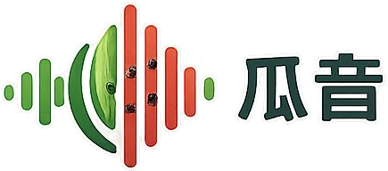
敲一敲 · 听懂好瓜
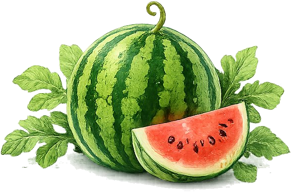
敲击西瓜身体侧面，按住按钮敲 3 次，松手即分析
AI 智能分析
秒级出结果
专业算法模型
频谱与波形实时显示
图文 + 视频教学
教你挑好瓜
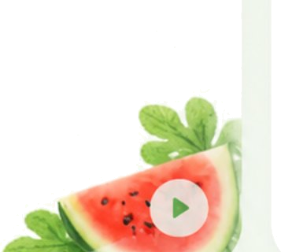
查看历史检测
记录挑瓜成果
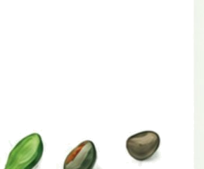
数据全程在本地浏览器处理，不上传任何服务器。结果仅供参考，非实验室级检测。
看、听、摸三步，挑到又甜又熟的好瓜
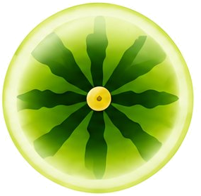
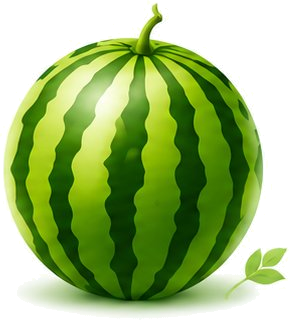
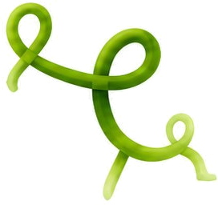
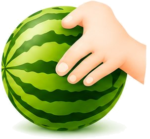
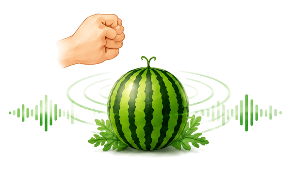
选择适合的西瓜品种
更容易挑到好瓜
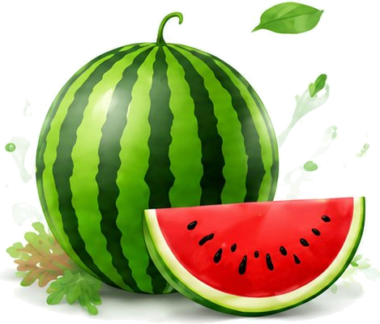
在西瓜赤道位置
（最鼓处）
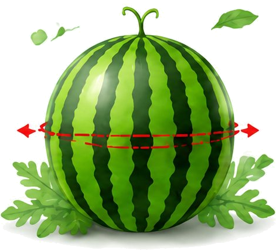
用指节轻敲
听声音判断
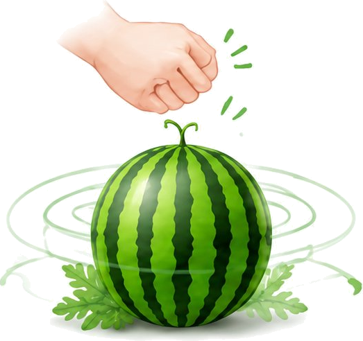
查看历史检测记录
记录仅保存在本机浏览器，可附照片对照。照片不参与成熟度评分。